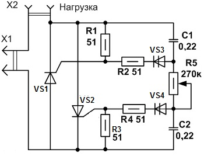

Светорегулятор на тиристорах
Схема светорегулятора на тиристорах (рис. 1) немного отличается от светорегулятора на симисторах, тем что для каждой полуволны стоит свой тиристор, и тем самым свой динистор для каждого ключа.

Рис. 1 - Схема светорегулятора на тиристорах
Таблица 1
| Обозначение | Наименование | Номинал | Количество | Примечание |
|---|---|---|---|---|
| C1,C2 | Конденсатор | 0,22 мкФ/400 В | 2 | |
| R1-R4 | Резистор постоянный | 51 Ом/0,5 Вт | 4 | МЛТ-0,5 |
| R5 | Резистор переменный | 270 кОм | 1 | |
| VS1, VS2 | Тринистор | КУ201 | 2 | |
| VS3, VS4 | Динистор | КН102А | 2 |
Во время положительной полуволны емкость C1 заряжается через цепочку R5, R4, R3. При достижении порога открывания динистора VS3, ток через него попадает на управляющий электрод VS1. Ключ открывается пропуская положительную полуволну через себя. При отрицательной фазе тиристор запирается, а процесс повторяется для другого ключа VS2, заряжаясь через цепочку R1, R2, R5.
Фазные регуляторы-димеры можно использовать также для регулирования скорости вращения вентилятора, температуры жала паяльника, оборотов дрели.
Данный способ регулирования не подходит для работы с люминесцентными, экономными компактными и светодиодными лампами.